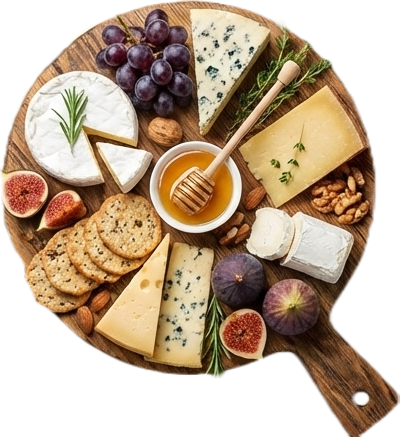

Khana Khazaana
Intelligent ingredient substitution using flavor chemistry and recipe intelligence.

Intelligent ingredient substitution using flavor chemistry and recipe intelligence.
Required ingredients may not be available while cooking.
Users need vegan, gluten-free, or allergy-safe substitutes.
Rule-based substitutions ruin taste and texture.
Existing tools ignore molecular flavor similarity.
Uses FlavorDB to match ingredients based on molecular flavor similarity.
Uses RecipeDB to understand ingredient usage in recipes.
Filters substitutes based on user dietary needs.
Ranks substitutes using flavor similarity and compatibility.
Select Dish
Extract Recipe
Select Ingredient
Apply Constraint
Fetch Flavor Data
Rank Substitutes